조선산업기사 (2003-08-10 기출문제)
1과목: 조선공학일반
1. 컨테이너선은 어느 종류의 선박에 속하는가?
- 여객선
- 어선
- 화물선
- 유조선
(정답률: 알수없음)

2. 선형(船型)의 종류 중 소형 화물선에서 선미 부분에 화물적재 공간을 늘려 선미 트림(trim)으로 해 주기 위해 선미부의 상갑판을 약간 높혀 낮은 선미루로 한 것은?
- 저선미루선
- 복갑판선
- 저선수루선
- 삼도형선
(정답률: 알수없음)
3. 선박의 프로펠러 효율과 관계가 없는 것은?
- 날개 면적
- 프로펠러 직경
- 피치(pitch)
- 엔진의 종류
(정답률: 알수없음)
4. 선박의 닻줄을 감아올리는 장치는?
- 페어 리더(fair leader)
- 윈드라스(windlass)
- 볼라드(bollard)
- 와핑 엔드(warping end)
(정답률: 알수없음)
5. 선박으로서 갖추어야 할 기본적인 3가지 특성이 아닌 것은?
- 부양성
- 적재성
- 이동성
- 예인성
(정답률: 알수없음)
6. 여객 정원이 20 명이고, 화물 수송을 함께 하는 선박은?
- 여객선
- 화객선
- 화물선
- 모선
(정답률: 알수없음)
7. 군함의 크기를 나타내는 데 사용되는 톤수는?
- 재화중량톤수
- 배수톤수
- 순톤수
- 총톤수
(정답률: 알수없음)
8. 하기만재 배수량이 8000 ton 이고, 형폭이 20 m, 선측의 유효 높이가 10 m, 하기만재흘수선 상부의 투영면적이 1500 m2인 선박의 의장수는?
- 884
- 760
- 950
- 942
(정답률: 알수없음)
9. 프루드(Froude)의 선박 저항 분류 방식에서 잉여저항은?
- 조파저항 ＋ 마찰저항
- 조파저항 ＋ 조와저항
- 마찰저항 ＋ 공기저항
- 조파저항 ＋ 공기저항
(정답률: 알수없음)
10. 선체와 프로펠러의 종합적인 추진 성능을 알기위한 시험은?
- 풍동시험
- 자항시험
- 마찰시험
- 경사시험
(정답률: 알수없음)
11. 선박이 조난한 경우 해상에 투하하여 이 곳에 탑승하거나 붙잡고 구조를 기다리는 목적에 사용되며, 신호장치, 의약품, 비상식량 등이 비치된 자항능력이 없는 구명설비는?
- 구조정
- 구명정
- 구명부환
- 구명뗏목
(정답률: 알수없음)
12. 선박 추진기관의 동력이 프로펠러에 전달되는 과정에서 각 단계별로 정의되는 다음의 동력 중 가장 큰 것은?
- 유효마력
- 전달마력
- 축마력
- 지시마력
(정답률: 알수없음)
13. 선박의 저항 종류 중 통상적으로 선박의 속도가 증가할수록 급격히 증가하는 저항은?
- 조파저항
- 마찰저항
- 공기저항
- 형상저항
(정답률: 알수없음)
14. 스톡리스(stockless) 앵커의 장점이 아닌 것은?
- 취급이 간단하다.
- 투묘한 후 스톡에 의한 닻줄이 꼬일 염려가 없다.
- 대형 앵커의 제작이 용이하다.
- 플루크에 의한 파지력이 강하다.
(정답률: 알수없음)
15. 길이가 130 m, 폭이 16.5 m, 평균흘수가 8.5 m, 해수에서의 배수중량이 15000 ton 인 선박의 방형계수(CB)는? (단, 해수의 비중은 1.025 이다.)
- 0.803
- 0.692
- 0.747
- 0.826
(정답률: 알수없음)
16. 하천을 운항하던 선박이 바다로 진입하면?
- 흘수가 증가한다.
- 흘수가 감소한다.
- 흘수가 변화하지 않는다.
- 흘수가 증가할 수도 감소할 수도 있다.
(정답률: 알수없음)
17. 수선면적(Aw)이 1200 m2인 선박의 갑판 중앙에 67.65 톤의 화물을 적재하였을 때 흘수 증가량은? (단, 해수의 비중은 1.025 이다.)
- 4.0 cm
- 4.5 cm
- 5.0 cm
- 5.5 cm
(정답률: 알수없음)
18. 선박의 톤수와 관련된 다음의 관계식 중 옳은 것은?
- 재화중량 + 경하 배수량 = 만재 배수량
- 재화중량 - 경하 배수량 = 만재 배수량
- 경하 배수량 - 순톤수 = 만재 배수량
- 재화중량 + 순톤수 = 만재 배수량
(정답률: 알수없음)
19. 선박의 복원력에 관한 설명으로 잘못된 것은?
- 선박의 무게 중심이 낮을수록 복원력은 크다.
- 선박의 폭이 증가하면 복원력은 감소한다.
- 일반적으로 세깅상태에서는 복원력이 감소한다.
- 탱크내의 자유수는 복원력을 감소시킨다.
(정답률: 알수없음)
20. 선박이 하천, 운하 등 수심이 얕은 곳을 지나갈 때 저항이 증가하는데 이것을 무엇이라 하는가?
- 조와저항 증가 현상
- 와류 현상
- 천수영향
- 거칠기 영향
(정답률: 알수없음)
2과목: 조선유체역학 및 재료역학
21. 단면 b(폭)×h(높이)＝3㎝×4㎝, 길이 40㎝인 외팔보의 자유단에 300N의 집중하중이 작용하면 자유단에서의 최대처짐은 몇 cm인가? (단, 탄성계수 E = 200GPa이다.)
- 0.01
- 0.02
- 0.04
- 0.08
(정답률: 알수없음)
22. 베르누이 방정식
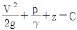
에서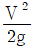
은 어떤 수두이며, 단위는 무엇인가?- 위치수두, m/s
- 속도수두, m
- 위치수두, m
- 속도수두, m/s
(정답률: 알수없음)
23. 단면이 정사각형인 보에 4200N.m의 굽힘모멘트가 가해지고 있다. 보의 허용 굽힘응력을 100MPa라고 할 때 단면에서 한 변의 치수는 몇 cm인가?
- 6.32
- 8.32
- 10.32
- 12.32
(정답률: 알수없음)
24. 외팔보에서 그림과 같은 하중이 작용할때 고정단의 굽힘응력은 몇 MPa인가? (단, 한변의 길이는 10㎝의 정사각형 단면이다.)
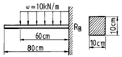
- 14
- 10.8
- 27
- 28
(정답률: 알수없음)
25. 그림과 같은 피토관이 유동장내에 설치되었을 때, Po 에 의한 수두 변화가 0.5 m 라면 유속 Vo 는?
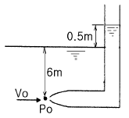
- 9.8 m/s
- 4.9 m/s
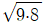
m/s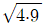
m/s
(정답률: 알수없음)
26. 유체 흐름에서 연속방정식이란?
- 유체의 모든 입자에 뉴톤의 관성의 법칙을 적용시킨 방정식이다.
- 에너지와 일 사이의 관계를 나타낸 방정식이다.
- 유체를 연속체라 가정하고 탄성역학의 후크의 법칙을 적용한 방정식이다.
- 질량보존의 법칙을 유체유동에 적용한 방정식이다.
(정답률: 알수없음)
27. 부력의 작용선을 옳게 설명한 것은?
- 유체에 잠겨 있는 물체의 중심을 지난다.
- 물체에 의하여 배제(排除)된 유체의 체심(體心)을 지난다.
- 부양체의 체심을 지난다.
- 부양체를 수평면에 투영한 투영면의 도심을 통과한다
(정답률: 알수없음)
28. 그림과 같은 평면 응력상태에서 최대 전단 응력과 최대수직 응력은 각각 몇 MPa인가?
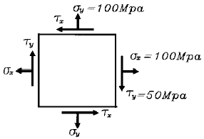
- τmax=100, σmax=150
- τmax= 50, σmax=150
- τmax= 50, σmax=100
- τmax= 25, σmax=100
(정답률: 알수없음)
29. 지름 1 cm 인 원관 속에 0 ℃ 의 물이 흐르고 있다. 물의 평균속도가 2 m / s 이면 레이놀드(Reyonlds)수는? (단, 0 ℃ 물의 동점성계수(γ)는 0.0131 cm2/s 이다.)
- 15267
- 16378
- 13045
- 17489
(정답률: 알수없음)
30. 내압 3MPa, 안지름 100cm의 보일러 원통의 판두께는 몇 mm인가? (단, 재료의 허용응력을 90MPa이고, 이음효율은 70%이다)
- 8
- 16
- 24
- 32
(정답률: 알수없음)
31. 보에서 정역학적 평형조건만으로 지점반력을 구할 수 있는 보를 정정보라고 한다. 다음 중 정정보가 아닌 것은?
- 단순보
- 돌출보
- 외팔보
- 연속보
(정답률: 알수없음)
32. 점성계수의 차원은? ( 단, L : 길이, T : 시간, M : 질량)
- L2T –1
- M L-1T -1
- M L-3
- M LT-2
(정답률: 알수없음)
33. 한 변의 길이가 6cm인 정사각형 단면의 단면계수와 같은 원형단면 축을 만들려면 지름을 몇 cm로 해야 하는가?
- 7.2
- 8.2
- 9.2
- 10.2
(정답률: 알수없음)
34. 그림과 같이 양단을 고정한 균일단면봉의 단면 m-n에 축 하중 50kN이 작용할 때 양단에서의 반력비 R1/R2은?
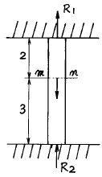
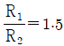
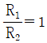
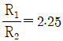
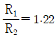
(정답률: 알수없음)
35. 내경 5cm, 길이 3m 인 곧은 관에서의 유체가 층류유동을 하고, 압력강하가 0.98 N/cm2 이라면 관벽에서의 전단응력은?
- 99.67 N/m2
- 80.07 N/m2
- 60.47 N/m2
- 40.83 N/m2
(정답률: 알수없음)
36. 정상류(steady flow)에 대한 설명으로 옳은 것은?
- 유동의 특성이 시간에 따라 주기적으로 변하는 흐름
- 비점성, 비압축성 유체의 흐름
- 유동의 특성이 시간에 따라 변하지 않는 흐름
- 전 유체 영역에 걸쳐 층류만 존재하는 흐름
(정답률: 알수없음)
37. 길이 100m, 속도 15knot인 선박에 대하여, 길이 10 m인 모형선을 제작하여 수조시험하는 경우, 모형선의 대응속도는?
- 2.94 knot
- 4.06 knot
- 4.74 knot
- 5.95 knot
(정답률: 알수없음)
38. 다음 중 유체 정력학으로 다룰 수 없는 경우는?
- 댐에 들어있는 물이 가지는 힘의 계산
- 대기중의 압력변화 계산
- 등가속도의 운동을 받고 있는 유체 거동
- 정수중에 정박해 있는 선박의 외력계산
(정답률: 알수없음)
39. 곧은 봉에 축 하중을 주었을 때 포아송 비(Poisson's ratio)의 정의로 옳은 것은?
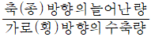
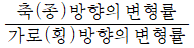
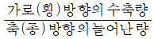
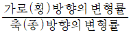
(정답률: 알수없음)
40. 그림과 같은 L형 단면의 도심이
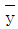
=35mm,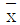
=25mm이다. x-x축의 단면 2차 모멘트 Ix를 구하면 몇 ㎝4인가? (단, 단면두께는 20mm이다.)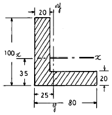
- 209.4
- 210.4
- 286.8
- 290.9
(정답률: 알수없음)
3과목: 선체구조학
41. 선체의 길이가 L일 때 선수격벽은 선수로부터 얼마 정도 떨어진 곳에 설치하는가?
- (1/10)L 근처
- (1/30)L 근처
- (1/40)L 근처
- (1/20)L 근처
(정답률: 알수없음)
42. 선체의 종강도에 관한 설명 중 틀린 항은?
- 선박의 폭(breadth)이 넓으면 종강도에 유리하다.
- 선박의 깊이(depth)가 깊으면 종강도에 유리하다.
- 선박의 흘수(draft)가 얕으면 종강도에 유리하다.
- 선박의 길이가 길면 종강도에 유리하다.
(정답률: 알수없음)
43. 만재배수량이 3000 ton, 길이가 100 m, 깊이가 10 m, 상수 C 가 30 인 선박의 최대 세로굽힘모멘트의 근사값은?
- 1000 ton · m
- 10000 ton · m
- 3000 ton · m
- 30000 ton · m
(정답률: 알수없음)
44. 빌지 용골(bilge keel)의 기능은?
- 종강도 기여
- 횡요 감소
- 흘수 증대
- 저항 감소
(정답률: 알수없음)
45. 선박 계류 시 다른 물체와의 충돌로부터 선측외판을 보호하기 위하여 설치되는 부재는?
- 방현재
- 만곡부 용골
- 실체늑판
- 특설늑골
(정답률: 알수없음)
46. 선측외판 중에서 강력갑판의 현측에 붙는 최상부 외판은?
- 갑판 보
- 갑판 스트링어
- 현측후판
- 마진판
(정답률: 알수없음)
47. 선미격벽의 기능이 아닌 것은?
- 선미 손상 시 침수 방지
- 선미관 지지
- 횡강도 유지
- 주기 중량 지지
(정답률: 알수없음)
48. 선수탱크(fore peak tank)내에 들어 있는 물의 자유표면의 영향을 방지하기 위하여 설치하는 것은?
- 제수격벽
- 수밀격벽
- 브레스트 훅
- 팬팅 스트링거
(정답률: 알수없음)
49. 선박 종강도 계산에 있어서 하중곡선(load curve)은?
- 선박 중량의 길이방향의 분포상태를 곡선으로 나타낸 것
- 선체 부력의 길이방향의 분포상태를 곡선으로 나타낸 것
- 선체 길이 방향의 각각의 위치에서 중력과 부력의 차를 곡선으로 나타낸 것
- 선체 길이 방향의 각각의 위치에서 전단력의 분포상태를 곡선으로 나타낸 것
(정답률: 알수없음)
50. 선측 스트링거를 옳게 설명한 것은?
- 선수미 늑골을 보강하는 횡강도 부재이다.
- 선측에 붙이는 종통재로서 늑골 상호의 위치를 확보하고 외판의 요철을 방지한다.
- 해치 빔(beam) 위에만 설치한다.
- 특설 늑골 사이에만 설치한다.
(정답률: 알수없음)
51. 일반구조용 압연강재의 기호 S S 400 에서 숫자 400 은?
- 연신율
- 샤르피 충격값
- 최저인장강도
- 열팽창계수
(정답률: 알수없음)
52. 선저 외판의 두께를 결정하는 데 그다지 영향을 주지 않는 것은?
- 선박의 길이
- 선박의 폭
- 늑골 간격
- 만재흘수
(정답률: 알수없음)
53. 적도(赤道) 구역을 항해하는 선박에 나타나는 온도효과에 기인하는 응력의 분포는 어느 상태와 비슷한가?
- 호깅 상태
- 새깅 상태
- 래킹 상태
- 슬래밍 상태
(정답률: 알수없음)
54. 대형 선박에서 증설격벽에 해당되는 것은?
- 선수전단 격벽
- 선창 격벽
- 선미 격벽
- 기관실전단 격벽
(정답률: 알수없음)
55. 횡늑골식 구조의 설명으로 부적합한 것은?
- 구조가 간편하며 건조하기가 쉽다.
- 재화(載貨)가 편리하다.
- 소형 선박에 적합하다.
- 단저구조에 종강도를 유지하는 데 유리하다.
(정답률: 알수없음)
56. 다음 중 선체 종강력 부재가 아닌 것은?
- 중심선 내저판
- 마진판
- 늑판
- 만곡부 외판
(정답률: 알수없음)
57. 별도의 보강재(stiffener) 없이 강판을 굴곡시켜 보강재를 생략한 격벽은?
- 파형격벽
- 선수미격벽
- 수밀격벽
- 제수격벽
(정답률: 알수없음)
58. 선체 구조부재 명칭과 기능에 관한 설명 중 잘못된 것은?
- 이중저 늑판의 중심선을 관통하는 판을 중심선 거더(center girder)라 한다.
- 선체의 현측에 해수침입을 막기 위해 불워크가 설치된다.
- 선체의 현측 상부 부재인 거널(gunwale)은 종강도 계산 시 포함되지 않는다.
- 필러(pillar)는 갑판보를 지지하여 갑판이 아래로 쳐지는 것을 방지한다.
(정답률: 알수없음)
59. 선박의 어떤 단면에서의 굽힘모멘트가 3 kN · m 이고, 단면계수가 100 cm3이면 이 단면에서의 굽힘응력은?
- 30 N/cm2
- 300 N/cm2
- 3 kN/cm2
- 30 kN/cm2
(정답률: 알수없음)
60. 강도가 충분하지 않을 경우 늑골(frame)의 설계방법과 거리가 먼 것은?
- 특설늑골을 증설한다.
- 늑골의 치수를 증가시킨다.
- 늑골간의 간격를 증가시킨다.
- 집중하중을 받는 경우 늑골을 적절히 보강해 준다.
(정답률: 알수없음)
4과목: 선박건조학 및 선박동력장치
61. 디젤기관에 사용하는 피스톤링의 고착 원인이 아닌 것은?
- 실린더 냉각수 순환량이 과다할 때
- 링과 링 홈의 간격이 부적당할 때
- 링의 장력이 부족하였을 때
- 불순물이 많은 연료를 사용하였을 때
(정답률: 알수없음)
62. 최근 조선소 설비의 특징 설명으로 잘못된 것은?
- 가공 및 소조립 공장은 대부분 옥내로 하여 우천 시에도 작업을 가능하게 한다.
- 컴퓨터의 도입으로 원척 현도장의 활용도가 높다.
- 선박의 대형화에 맞추어 건조 독(dry dock) 방식을 많이 채택한다.
- 선행의장을 고려한 설비를 갖춘다.
(정답률: 알수없음)
63. 선체의 세로진수 시 선미 부양이 막 일어났을 때 선체에 작용하는 힘의 상태는?
- 새깅
- 호깅
- 롤링
- 힐링
(정답률: 알수없음)
64. 디젤기관을 추진기관으로 사용하는 선박에서 감속/역전장치를 두는 이유가 아닌 것은?
- 클러치를 떼고 추진기관을 하역펌프 등의 원동기로 사용하기 위하여
- 기관이 자기역전식이 아닌 경우 프로펠러의 회전 방향을 바꾸기 위하여
- 프로펠러의 회전속도를 낮추고 직경을 크게 하여 프로펠러의 효율을 높이기 위하여
- 추진축의 직경을 가늘게 할 수 있어 제작비를 낮추고 중량을 감소시키기 위하여
(정답률: 알수없음)
65. 필릿 용접 이음부의 틈새가 3 ∼ 4 mm 이하인 경우 보수 방법은?
- 본용접 시 규정 다리 길이에 틈새 양만큼 증가시켜 용접한다.
- 라이너를 삽입한다.
- 뒷면 댐쇠를 대고 용접한다.
- 재료의 일부를 새로이 취환한다.
(정답률: 알수없음)
66. 선체 블록 분할 시 유의사항으로 잘못 설명된 것은?
- 크레인 능력에 따라 블록의 무게를 제한한다.
- 운반 및 반전 작업 시에 변형이 되지 않도록 한다.
- 선수미 블록은 평면 블록으로 분할한다.
- 선형을 결정하기 쉬운 블록으로 한다.
(정답률: 알수없음)
67. 가스터빈을 구성하는 3대 요소가 아닌 것은?
- 터빈
- 발전기
- 압축기
- 연소실
(정답률: 알수없음)
68. 선체 조립용 기준선으로 사용되지 않는 것은?
- 버톡 라인(buttock line)
- 프레임 라인(frame line)
- 워터 라인(water line)
- 너클 라인(knuckle line)
(정답률: 알수없음)
69. 2행정과 4행정 디젤기관을 비교한 설명으로 틀린 것은?
- 2행정 기관은 동일 크기의 4행정 기관에 비하여 출력이 크다.
- 4행정 기관은 720도 회전에 흡입, 압축, 팽창, 배기과정이 완결된다.
- 2행정 기관은 4행정 기관에 비하여 토크 변화가 적어 운전이 원활하다.
- 4행정 기관은 2행정 기관에 비하여 시동은 쉬우나 저속운전이 불안정하다.
(정답률: 알수없음)
70. 선박 건조방식 중 상형 건조법에 대한 설명으로 틀린 것은?
- 코킹 업(cocking up)이 적다.
- 검사 및 의장공사가 유리하다.
- 탑재 초기에 선거의 잉여 면적을 활용할 수 있다.
- 전개면적이 크므로 비교적 다수의 작업 인원이 흡수된다.
(정답률: 알수없음)
71. 디젤기관과 가솔린기관의 특징을 비교한 것 중 틀린 것은?
- 디젤기관은 가솔린기관에 비하여 압축비가 낮다.
- 가솔린기관은 디젤기관에 비하여 연료소비율이 높고 열효율이 낮다.
- 디젤기관은 가솔린기관에 비하여 구조를 견고하게 할 필요가 있다.
- 디젤기관의 연료는 경유 또는 중유를 사용한다.
(정답률: 알수없음)
72. 조립할 피용접물을 일정한 형상으로 유지하는 본용접의 준비 공정은?
- 가용접
- 필릿(fillet)용접
- 맞대기 용접
- 슬릿용접
(정답률: 알수없음)
73. 4사이클 디젤 기관에서 행정이 420 mm, 매분 폭발회수가 180 회일 때 피스턴의 평균속도는?
- 4.04 m/s
- 2.52 m/s
- 6.04 m/s
- 5.04 m/s
(정답률: 알수없음)
74. 피치가 0.8 m 이고, 매분 회전수가 300 rpm 일 때 프로펠러의 속력은 약 몇 노트(knot)인가?
- 6.8 knot
- 7.8 knot
- 8.5 knot
- 10.5 knot
(정답률: 알수없음)
75. 선박에 설비된 추진장치로서 가변피치 프로펠러의 장점이 아닌 것은?
- 주기를 역전할 필요가 없다.
- 일정 토크 운전이 가능하다.
- 추진 효율이 좋다.
- 회전수를 임의로 택할 수가 있다.
(정답률: 알수없음)
76. 윤활유나 중유 등 비교적 점도가 큰 유체를 이송하는데 가장 적합한 펌프는?
- 기어 펌프
- 로브 펌프
- 스크류 펌프
- 원심 펌프
(정답률: 알수없음)
77. 추진기 날개의 공동현상에 의한 침식(erosion)은?
- 공동현상의 발생 초기에 일어난다.
- 공동현상의 소멸 시 일어난다.
- 공동현상의 발생 도중에 일어난다.
- 공동현상과 침식은 관계가 없다.
(정답률: 알수없음)
78. 플레임 플레이너(flame planer)의 주요 용도는?
- 강판을 둥글게 말거나 곡가공
- 용접개소의 변형의 교정
- 강판의 직선 절단 및 용접 개선
- 강판에 다수의 구멍을 동시에 뚫기
(정답률: 알수없음)
79. 선박건조에 있어, 조립장과 탑재 선대 사이에 대블록을 만드는 중간 공정을 두는 탑재 방법은?
- 세미 탄댐법
- 프리 이렉션법
- 분할 탑재법
- 층식 탑재법
(정답률: 알수없음)
80. 강판의 가스절단 작업 시 활용되는 변형방지법으로 부적당한 것은?
- 역각도법
- 수냉각법
- 가열법
- 구속법
(정답률: 알수없음)